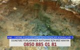
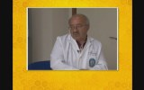
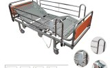
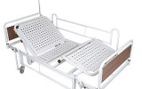

Bu Hafta En Çok İzlenen Sağlık Videoları
-
Yenidoğan Bebek Nasıl Emzirilir?
95 izlenme 4 gün önce -

Hacamat Çeşitleri Ve Uygulama Teknikleri Nelerdir?
80 izlenme 5 gün önce -
Kızılay Haftası - Deprem
48 izlenme 2 gün önce -

Abdulaziz Koca - Hacamat Ve Sülük Tedavisi Olan Hastalar Neler Hissederler?
39 izlenme 5 gün önce
-
Kırışıklık ve Leke Giderici Avakado Maskesi - İbrahim Saraçoğlu
23 izlenme 2 gün önce -

Paşalar Konakları
20 izlenme 3 gün önce -
Abdulaziz Koca - Hacamat Vücudun Hangi Bölgelerine Uygulanır Ve Yaş Sınırı Var Mıdır?
19 izlenme 5 gün önce -

Altın Dakikalarda Doktor Sensin 6. Bölüm
18 izlenme 5 gün önce -
Abdulaziz Koca - Hacamatın Faydaları Nelerdir?
17 izlenme 5 gün önce -

Kızılay Haftası - Yangın
18 izlenme 2 gün önce -
Kızılay Haftası - Sel
15 izlenme 2 gün önce -
Doğal Tedavi Yöntemleri Ve Faydaları Nelerdir?
10 izlenme 5 gün önce -
Hacamat Ve Sülük Tedavisi Birlikte Yapılmalı Mıdır?
9 izlenme 5 gün önce -
Vücutta Nabız Alınabilen Bölgeler Nerelerdir?
6 izlenme 7 gün önce -

Su Bazlı Propolis Dem Natural
6 izlenme 21 saat önce -

Elektrikli El Kumandalı Hasta Karyolası İzmir Medikal House
5 izlenme 2 gün önce -
Kekemelik Nasıl Düzelir
4 izlenme 4 gün önce -

Aysel Çelik - Alzheimer
3 izlenme 5 gün önce -
Uz. Dr. Aysel Çelik - Migren
3 izlenme 5 gün önce -

2 Motorlu Yatalak Hasta Karyolası İzmir Medikal House
1 izlenme 2 gün önce